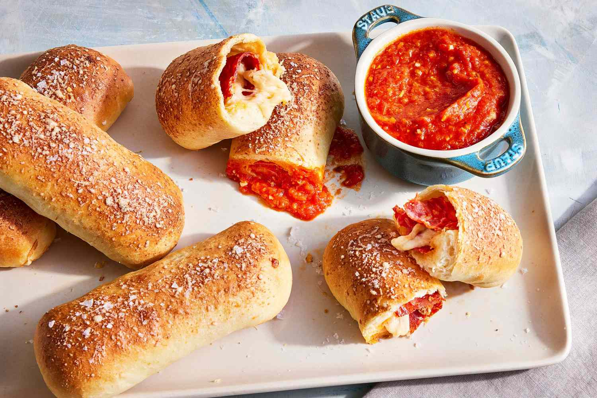

Pepperoni roll is a specialty of West Virginia consisting of a baked white bread roll filled with pepperoni sticks or slices. The roll is sold throughout the state at numerous gas stations, diners, and convenience stores, often paired with marinara sauce for dipping.
Meal prep time : 2 hours 10 minutes
Servings : 20